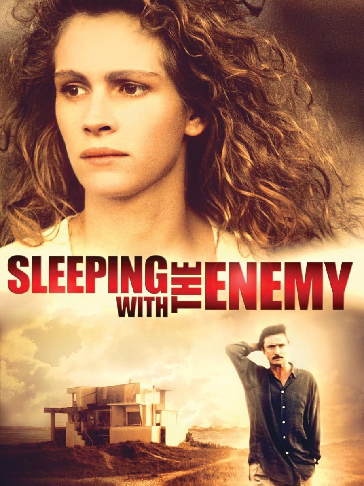
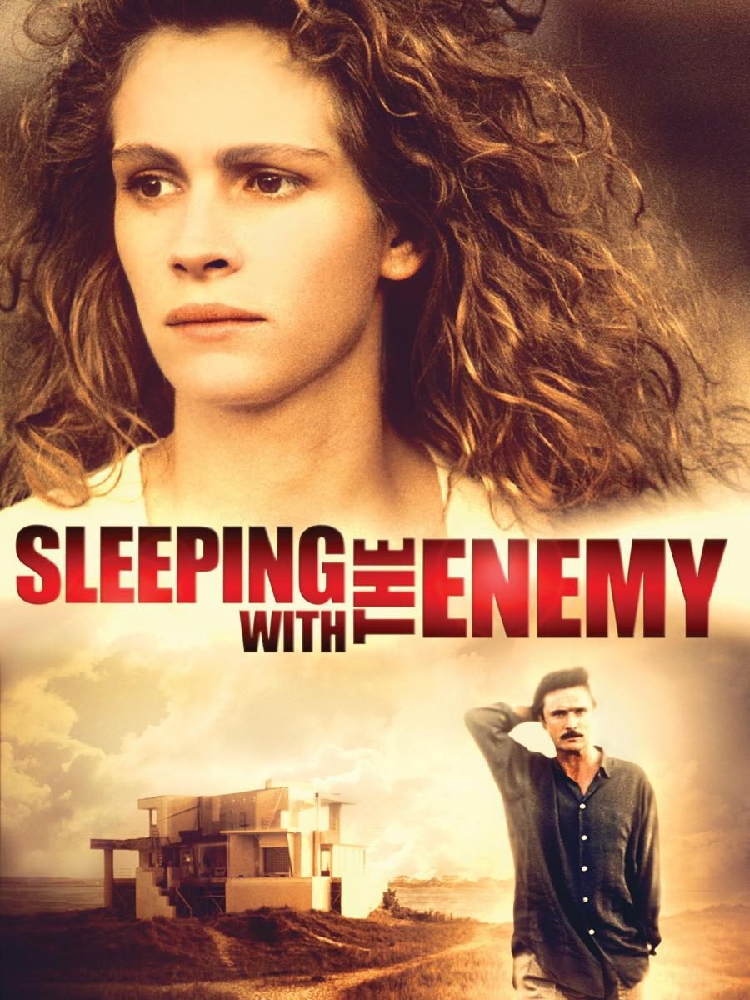

Más sobre Julia Roberts
¿Quién es?
Julia Fiona Roberts (1967) es una actriz de cine y televisión estadounidense, ganadora del premio Óscar a la mejor actriz, así como de tres Globos de Oro en las categorías de mejor actriz en drama, mejor actriz en comedia o musical y mejor actriz de reparto, un BAFTA a la mejor actriz y un premio del Sindicato de Actores a la mejor actriz protagonista.
En 1999 se convirtió en la primera mujer en ser considerada la intérprete más rentable del año por los distribuidores estadounidenses, gracias a los éxitos de Notting Hill y Runaway Bride, manteniendo el liderato femenino durante diez años hasta que Sandra Bullock lo consiguió en 2009 gracias a La Propuesta y Un sueño posible.
Para más información hacer clic aquí